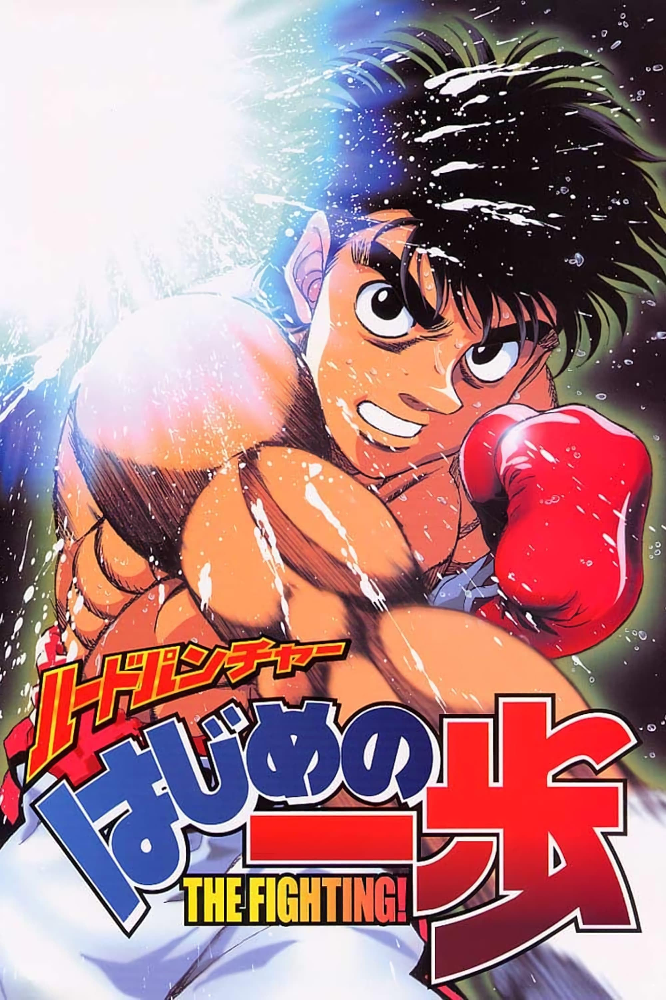
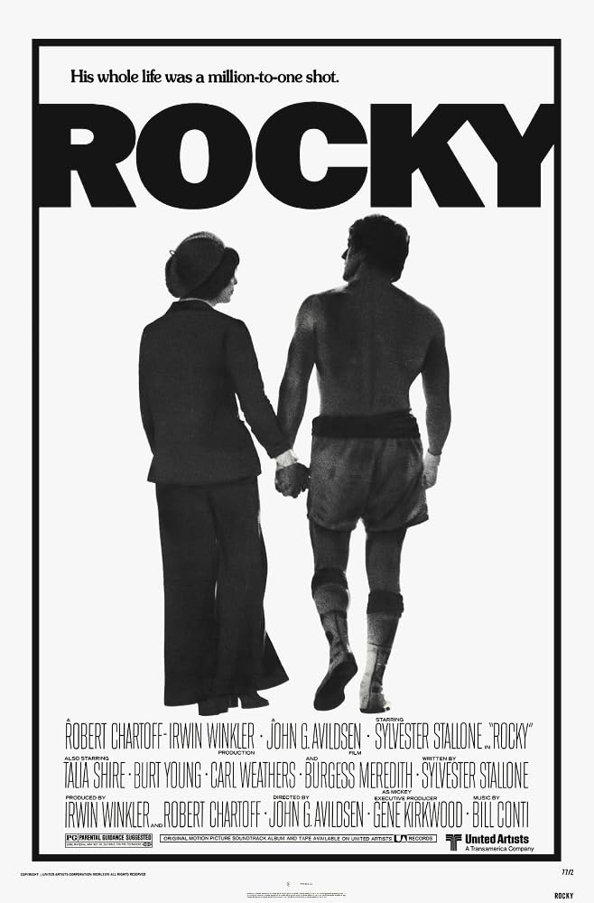
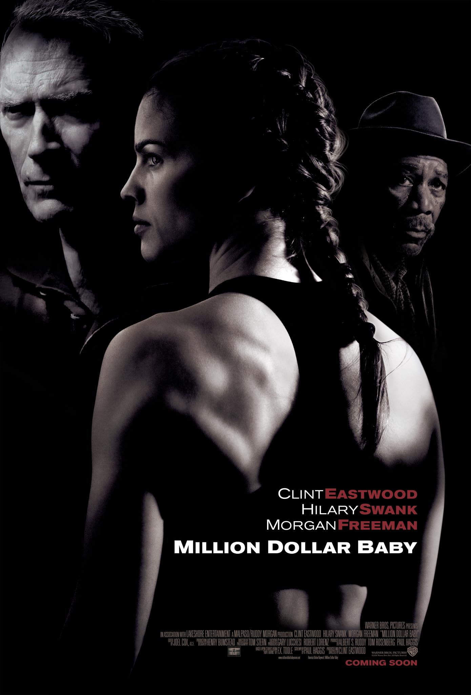
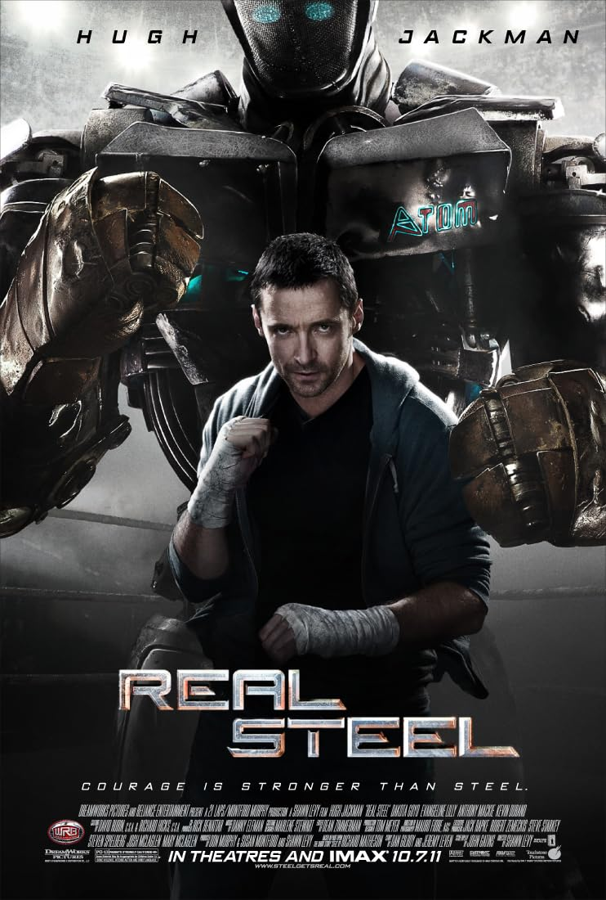
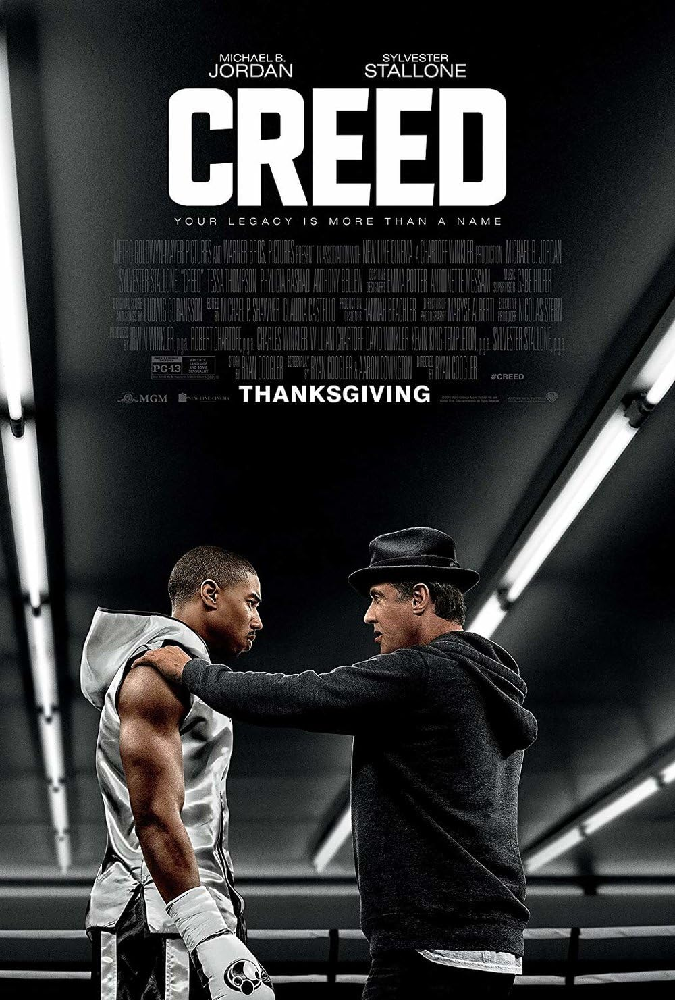

Hajime no Ippo: The Fighting!
Ippo, a teenage boy with a pure heart and unrelenting determination, discovers a passion for boxing after veteran fighter Takamura saves him from bullies.

Ippo, a teenage boy with a pure heart and unrelenting determination, discovers a passion for boxing after veteran fighter Takamura saves him from bullies.

A small-time Philadelphia boxer gets a supremely rare chance to fight the world heavyweight champion in a bout in which he strives to go the distance for his self-respect.

Frankie, an ill-tempered old coach, reluctantly agrees to train aspiring boxer Maggie. Impressed with her determination and talent, he helps her become the best and the two soon form a close bond.

In a near future where robot boxing is a top sport, a struggling ex-boxer feels he's found a champion in a discarded robot.

The former World Heavyweight Champion Rocky Balboa serves as a trainer and mentor to Adonis Johnson, the son of his late friend and former rival Apollo Creed.